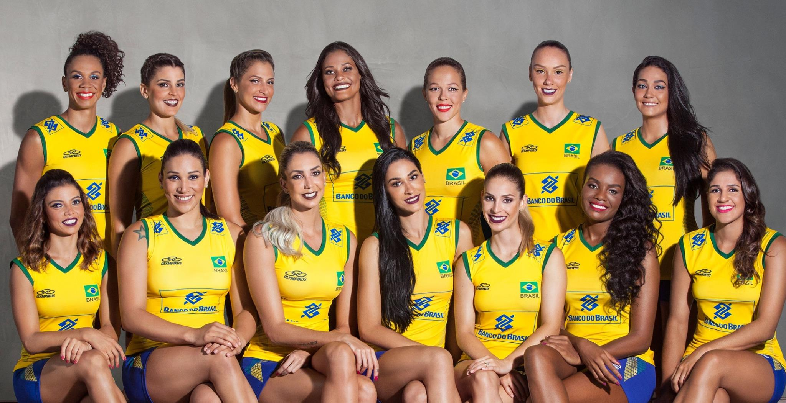
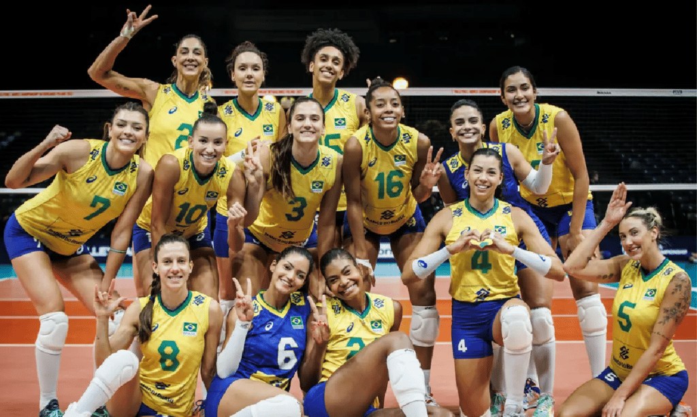
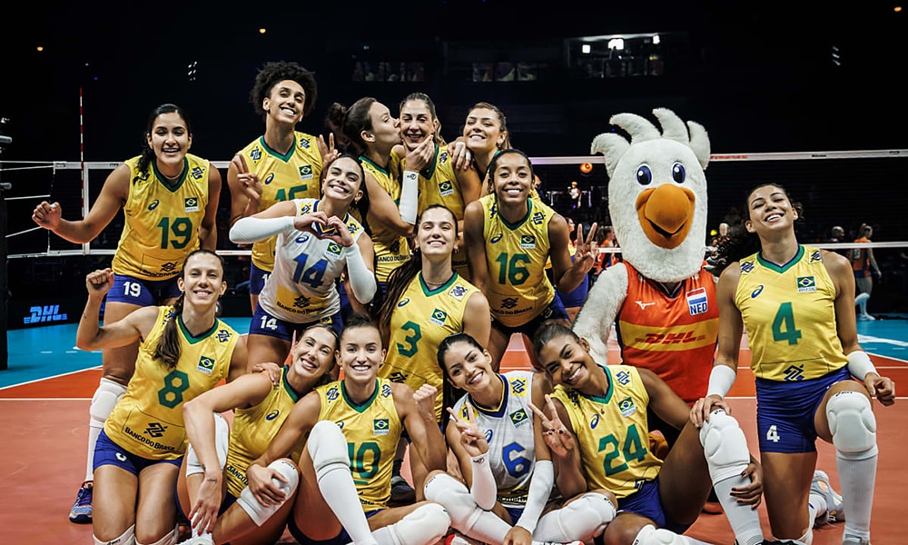
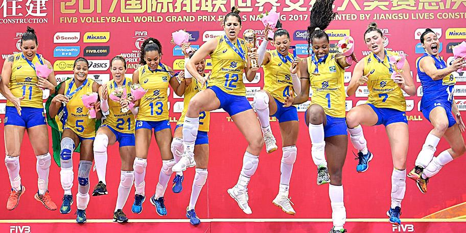
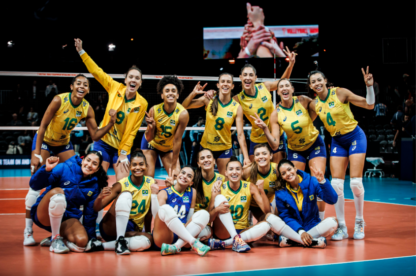

<!DOCTYPE htm1>
<htm1 long=’’pt-br’’>
     <head>
                <meta charset=’’UTF-8’’>
                <title>t</title>
                <link rel=’’stylesheet’’ hfet=’’style.css’’>


                <style>
                      p {
                            text-aligan: center
                      }
                </style>
     </head>
     <body>
            


             <h1 style=’’text-align: center; backgrund: #CCCCCC’’>A Força e a Superação da Seleção Feminina de Vôlei</h1>


            


<p>O voleibol é um esporte que desperta paixão e admiração em todo o mundo. No entanto, quando falamos sobre a seleção feminina de vôlei, é impossível não mencionar a força, a garra e a determinação dessas atletas que representam o Brasil nos maiores palcos esportivos. Ao longo dos anos, a seleção feminina de vôlei conquistou títulos, superou obstáculos e deixou um legado de inspiração para as futuras gerações. Nesta redação, exploraremos a trajetória marcante dessa equipe, ressaltando seu talento, conquistas e importância para o esporte nacional.
</p>



<p>Desde o seu surgimento, a seleção feminina de vôlei sempre esteve entre as melhores do mundo. Com um jogo coletivo exemplar e uma habilidade técnica refinada, essas atletas se destacam pela sua versatilidade e determinação em quadra. Sob a liderança de grandes treinadores e com jogadoras excepcionais, como Fofão, Fernanda Venturini, Sheilla, Fabiana, entre outras, o Brasil alcançou resultados expressivos ao longo dos anos.


   Uma das conquistas mais emblemáticas da seleção feminina de vôlei foi a medalha de ouro nos Jogos Olímpicos de Pequim, em 2008. Nessa ocasião, as brasileiras demonstraram um desempenho impecável, vencendo equipes renomadas e provando ao mundo seu talento e capacidade de superação. Essa vitória inédita marcou um momento histórico para o esporte brasileiro, deixando um legado de inspiração para futuras gerações de atletas.
</p>





<p>Além das Olimpíadas, a seleção feminina de vôlei também acumula títulos em outras competições importantes, como o Campeonato Mundial e a Liga das Nações. Essas conquistas não são apenas reflexo do talento individual das jogadoras, mas também da união e do espírito de equipe que permeia o grupo. A seleção feminina de vôlei é conhecida por sua coesão, trabalho em equipe e resiliência diante de adversidades.</p>



<p>Outro aspecto importante a ser destacado é o impacto social que a seleção feminina de vôlei tem no Brasil. Essas atletas são verdadeiras referências para meninas e mulheres, mostrando que é possível alcançar o sucesso por meio do esforço, dedicação e paixão pelo esporte. Elas rompem barreiras, desafiam estereótipos e inspiram jovens a seguir seus sonhos, fortalecendo o papel da mulher na sociedade.</p>


<em> <strong>"A seleção feminina de vôlei é um exemplo de excelência esportiva, determinação e superação. Com suas conquistas e atuações memoráveis, elas levam o nome do Brasil aos pódios e inspiram gerações. Essas atletas são verdadeiras embaixadoras do esporte nacional, mostrando ao mundo o talento e a paixão que possuem pelo voleibol."</strong>.</em></p>





     </body>
</htm1>
